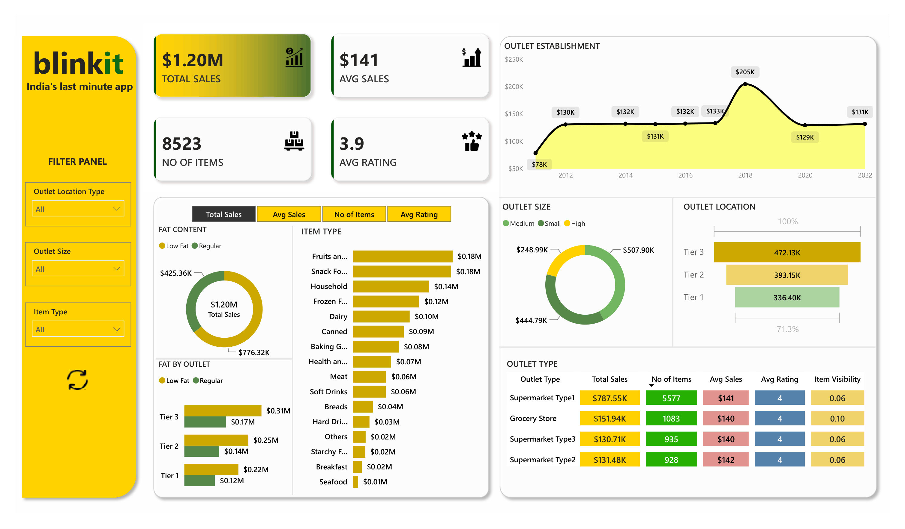

Aditya
Excel & Power BI Specialist
Data Analyst yang berfokus pada pengolahan data mentah menjadi dasbor interaktif yang bermakna. Berpengalaman dalam efisiensi pelaporan menggunakan Excel tingkat lanjut dan visualisasi data yang mendalam dengan Power BI.
Portofolio Proyek

Pengembangan dasbor interaktif end-to-end menggunakan Power BI untuk menganalisis ribuan data transaksi retail online grocery. Proyek ini berfokus pada visualisasi metrik performa utama guna mengidentifikasi tren penjualan produk, tingkat kepuasan konsumen (rating), serta efisiensi profitabilitas berdasarkan karakteristik dan lokasi geografis cabang (outlet).
- Metrik Utama: Total Sales, Average Sales, Number of Items Sold, Average Customer Rating.
- Alat: Power BI (Pemodelan Data DAX & Visualisasi Kontemporer).

Development of an interactive and dynamic sales performance dashboard using Microsoft Excel. This project transforms historical raw supermarket transaction data into actionable business insights, enabling decision-makers to track operational efficiency, product popularity, and payment trends across multiple branches.
- Financials: Total Sales (Gross Sales), Total Sales (Net of Tax), and Quarter-over-Quarter Sales Performance.
- Operations: Total Quantity of Products Sold and Average Customer Service Ratings.
- Segmentations: Product Line Popularity (e.g., Food & Beverage, Fashion, Electronics), City Breakdown (Yangon, Mandalay, Naypyitaw), and Customer Demographics (Member vs. Normal).
- Alat: Microsoft Excel (Data Formatting to Tables, Pivot Tables, Advanced Data Summarization, Pivot Charts for Visualizations, and Interactive Slicers with Connected Filter Connections).